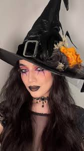
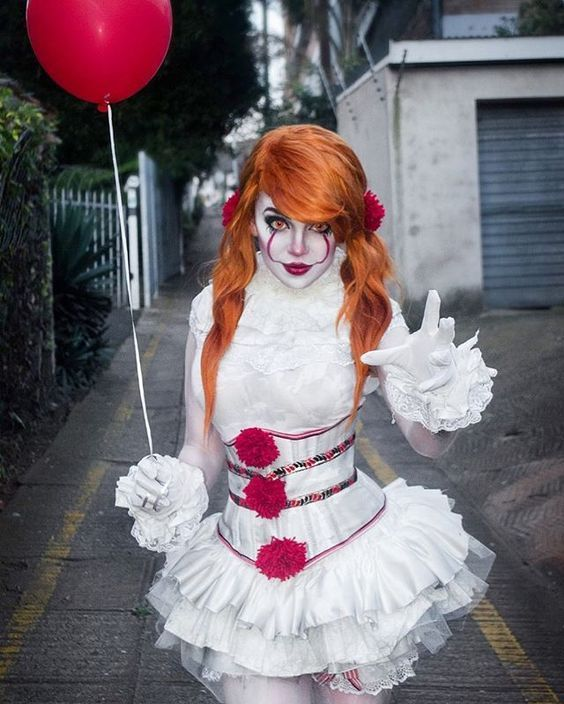

Fantasias de Múmia
A fantasia de múmia é comum no Halloween por representar os mortos que voltam à vida, ligada ao misticismo do Egito antigo. É fácil de fazer e tem forte apelo visual e assustador.
Saiba mais

Fantasias de Bruxa
Fantasias de bruxa são populares no Halloween por sua ligação com o oculto, magia e o sobrenatural. Elas simbolizam o misticismo da data e são ícones da cultura popular.
Saiba mais

Fantasias de Palhaço
A fantasia de palhaço no Halloween mistura o lado cômico com o assustador, popularizada por filmes e histórias de terror. É versátil e pode variar do divertido ao sinistro, como o palhaço Pennywise.
Saiba mais